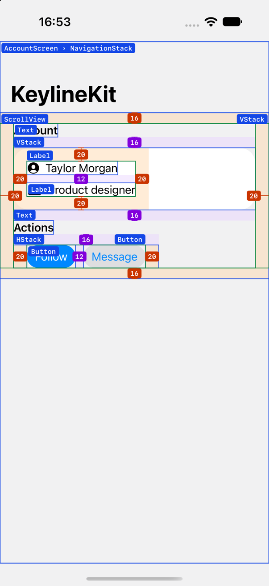

.layers
Each layer's type next to its bounds, nested containers included.
KeylineKit draws your preview's layers, padding, spacing, sizes, corner radii and safe area right on the Xcode Canvas, measured in points.
#Preview {
#Keyline {
ProfileView()
}
}
#Keyline { AccountScreen() }: layer names, padding and spacing.Every value comes from the rendered layout. When your code says something less precise than a number, KeylineKit shows both, so you learn what default really means.
| In your code | On the Canvas | Why |
|---|---|---|
.padding(24) | 24 | The measured value matches the source. |
.padding() | 16 · default | SwiftUI picked 16; the source said default. |
VStack(spacing: Theme.spacing) | 12 · Theme.spacing | The gap is measured; the constant is named. |
.background(.blue, in: RoundedRectangle(cornerRadius: 24)) | r 24 | Corner radii are read where they're applied. |
With no arguments, #Keyline draws layers, padding and spacing. Pass the annotations you want, in any combination, and change their colors.
.layersEach layer's type next to its bounds, nested containers included.
.paddingA band for every .padding(...) call, a value per edge and the content outline.
.spacingThe measured gap between siblings of a VStack or HStack.
.sizeWidth and height dimension lines with dashed extension lines.
.cornersThe arc and value of cornerRadius: and .cornerRadius(_:).
.safeAreaDevice insets, the safe area and, on iOS 27.1, the reserved regions that cover content.
Pass .keylineColors(_:) to change the color of any element. Set only the ones you want; the rest keep the default palette.
A color draws lines and badges, and a translucent copy fills regions. Set it on any parent view and it reaches every #Keyline inside.
#Preview {
#Keyline(.padding, .spacing) {
ProfileView()
}
.keylineColors(KeylineColors(
padding: .indigo,
spacing: .red
))
}Nothing runs in your app until a preview renders #Keyline.
At compile time, each view in the closure is wrapped in a node, with probes before and after every .padding(...) call.
At runtime, nodes and probes report their frames with onGeometryChange, also inside NavigationStack and ScrollView.
A layout step turns frames into bands, gaps and dimension lines, places labels so they never overlap, and a single Canvas draws them.
// What #Keyline turns VStack { ProfileView() }.padding(24) into
_KeylineNode(VStack {
_KeylineNode(ProfileView(), _KeylineDeclaration("ProfileView"))
}
._keylineProbe(.paddingInner(0))
.padding(24)
._keylineProbe(.paddingOuter(0, declared: "24")), _KeylineDeclaration("VStack", stack: .vertical, spacing: "default"))#Keyline sees the code inside its own closure, so a custom view shows up as a single layer. Add @Keylined to the type and the overlay also draws what its body declares.
When a view and the root of its body share a frame, they share a label: ProfileView › VStack.
@Keylined
struct ProfileView: View {
var body: some View {
VStack(alignment: .leading, spacing: 16) {
Image(systemName: "person.crop.circle.fill")
Text("Taylor Morgan")
}
.padding(24)
}
}KeylineKit to your app target.#Keyline.https://github.com/HelioMartin/KeylineKit.git
// Package.swift
dependencies: [
.package(url: "https://github.com/HelioMartin/KeylineKit.git", from: "0.1.0"),
],
targets: [
.target(name: "MyApp", dependencies: [
.product(name: "KeylineKit", package: "KeylineKit"),
]),
]